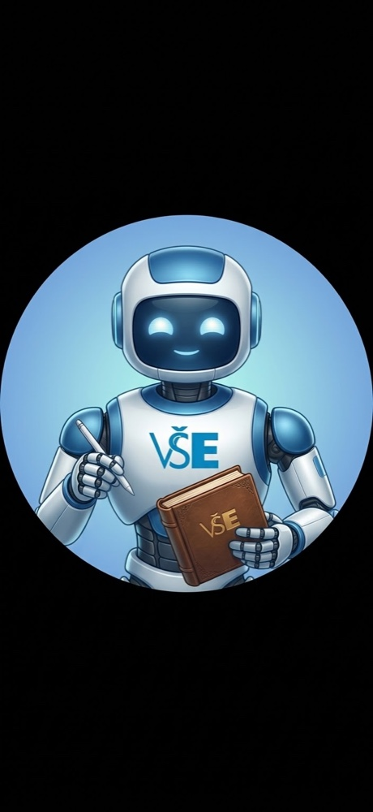
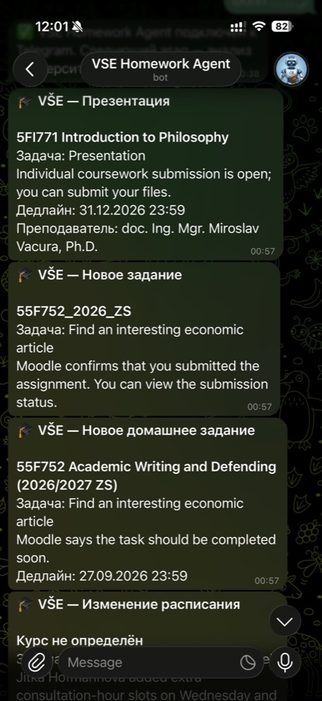

Personal academic automation
VSE Homework Agent
A local AI-powered system that turns university email into structured assignments, deadlines, and timely Telegram notifications.


01 / Problem
Assignments arrive as messages, not as a reliable plan.
University email can contain new assignments, deadline changes, submission notices, and schedule updates in inconsistent formats. The agent monitors that stream and turns relevant messages into information that is easier to act on.
This is a personal real-world project. It is not a university service or client commission.
02 / Flow
From incoming mail to a useful reminder.
The workflow monitors Apple Mail, identifies relevant university messages, uses the OpenAI Responses API to extract task details, stores normalized records locally, and sends structured updates through Telegram.
03 / Behavior
Designed for continuity, not just one-off extraction.
A local database keeps a record of detected tasks and supports duplicate detection. Scheduled jobs handle monitoring, reminders, and daily Telegram summaries, while automatic startup keeps the workflow available after macOS restarts.
- Automatic email monitoring
- AI-based task and deadline extraction
- Duplicate detection
- Deadline reminders
- Daily Telegram summaries
- Local database
- Automatic startup with macOS
04 / Technology
A focused local automation stack.
The system combines email automation, structured AI extraction, persistence, scheduling, and a compact messaging interface. Data remains in a local SQLite database.
- Python
- OpenAI Responses API
- SQLite
- SQLAlchemy
- APScheduler
- Apple Mail Automation
- Telegram Bot API
The interface examples shown here document the working project. Personal academic details should be anonymized before the site is published.